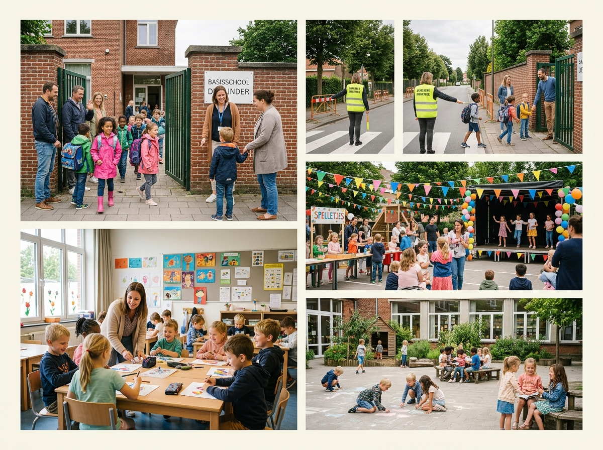
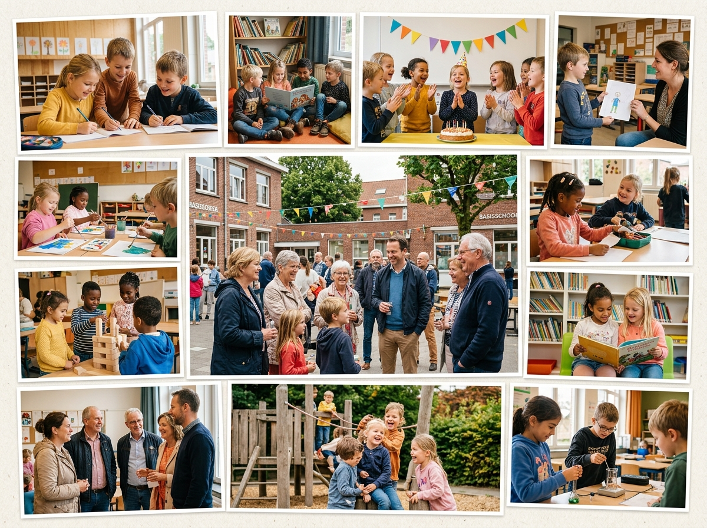

Actualité
Retrouvez ici une sélection d’actualités qui mettent en valeur la vie de l’école, les projets, les moments forts et l’accueil des familles. Cette page rassemble les contenus les plus parlants des publications récentes, avec un accent particulier sur la nouvelle page Facebook de l’école.

Découvrez notre école
Une belle vidéo de présentation met en avant l’ambiance familiale de l’école, l’accueil des enfants et l’ouverture des inscriptions pour les nouvelles familles.

Accès à l’école pendant les travaux
L’école reste accessible et l’équipe rassure les parents avec des informations pratiques pour arriver sereinement aux entrées malgré les changements autour du quartier.

Fancy Fair, un rendez-vous à ne pas manquer
La Fancy Fair fait partie des grands moments de l’année. L’école y montre son dynamisme, sa créativité et le plaisir de partager un vrai temps festif en communauté.
Préparer la rentrée en confiance
La communication de rentrée met l’accent sur l’accueil des familles, l’organisation pratique et la volonté d’accompagner les enfants dans un climat rassurant.
Encourager les élèves pendant les CEB
Un message simple mais important, qui souligne l’attention portée aux élèves dans les moments clés de leur parcours et la proximité de l’équipe éducative.
Une école à taille humaine
Les publications récentes montrent une école chaleureuse, où les enfants apprennent dans un cadre bienveillant, proche des familles et attentif au rythme de chacun.
Créativité et expression au quotidien
Entre ateliers, activités artistiques et projets de classe, l’école valorise les talents des enfants et leur donne de nombreuses occasions de s’exprimer.
Visites et rencontres avec les familles
Les messages d’inscription insistent sur la disponibilité de l’école pour accueillir les parents, faire visiter les lieux et répondre concrètement aux questions.
Apprendre ensemble
La page met régulièrement en avant une école où l’on apprend, où l’on grandit et où chaque enfant peut avancer dans un environnement positif et stimulant.
Un cadre bienveillant
Le ton des publications rappelle l’importance du bien-être à l’école, de la sécurité affective et d’un climat de confiance pour les enfants comme pour les parents.
Des moments qui font vivre l’école
Fêtes, rendez-vous collectifs et petites annonces utiles donnent une image vivante de l’établissement et montrent une école active tout au long de l’année.
Une équipe engagée
À travers ses publications, l’école met en avant une équipe présente, impliquée et attentive, qui travaille chaque jour pour offrir un cadre de qualité.
Découvrir, observer, progresser
Les contenus partagés valorisent une école qui encourage la curiosité, les découvertes et les apprentissages concrets, aussi bien en maternelle qu’en primaire.
Une ambiance de fête et de partage
Autour des événements comme la Fancy Fair, on retrouve l’envie de rassembler les familles et de faire rayonner l’école dans une atmosphère conviviale.
Un accueil pensé pour les enfants
Les visuels et les textes donnent une impression claire : ici, les enfants sont accueillis avec attention, douceur et envie de les voir évoluer sereinement.
Une communication plus vivante
La nouvelle page Facebook permet de mieux montrer la réalité du terrain, les projets, les sourires, les activités et tout ce qui fait le quotidien de l’école.
Classes dynamiques et activités variées
Les contenus valorisent une école où l’on retrouve à la fois les apprentissages fondamentaux et des moments plus ludiques ou créatifs.
Une relation de confiance avec les familles
Les publications importantes prennent le temps d’expliquer, de rassurer et de garder un contact simple avec les parents, ce qui renforce le lien école-familles.
Grandir aussi à travers la vie collective
La vie d’école se construit dans les projets communs, les fêtes, les rencontres et les activités partagées qui permettent aux enfants d’évoluer ensemble.
Une école qui se montre telle qu’elle est
Ce nouvel espace d’actualité permet de mettre en avant le meilleur de l’école : son énergie, son accueil, ses projets et sa vie quotidienne.